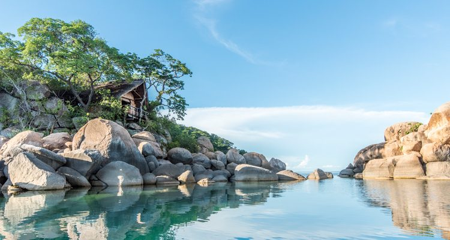

JAMES NANTHURU
About Me
Born and raised in Blantyre, Malawi, I am a dedicated educator and agricultural economist who combines data-driven instruction with applied research to solve structural inefficiencies in Malawian food systems. Holding a Diploma in Agricultural Education and a Bachelor’s degree in Agricultural Economics, I leverage classroom teaching as a platform to apply modern education techniques, while focusing my core career trajectory on agricultural development. My field research in Songani exposed critical vulnerabilities in smallholder farming, specifically identifying that inadequate storage causes post-harvest losses exceeding 30 percent, while women remain marginalized in farm-level decision-making despite driving production. Equipped with technical proficiency in Excel, SPSS, Stata, and Power BI, I am currently pursuing a BSc in Software Development to master various coding languages, while actively gaining experience in web programming. My goal is to bridge the gap between technology and development by creating intuitive web applications and digital platforms that deliver real-time agricultural data, policy insights, and modern educational resources directly to smallholder farmers and educators. Ultimately, I aim to pioneer evidence-based development strategies and smart-tech solutions that mitigate crop losses, secure food systems, and elevate livelihoods across Malawi.
My Education Journey
BSc Software Development
Brigham Young University – Pathway Worldwide Oct 2025 – Dec 2028
BSc in Agricultural Economics (Credit)
Lilongwe University of Agriculture and Natural Resources Jan 2020 – Dec 2024
About My City Zomba, Malawi

Zomba is a city in southern Malawi. It was Malawi's capital until 1975. The British colonial past is evident in the architecture. The National Herbarium and Botanic Gardens houses rare and medicinal plants. The city is at the foot of the Zomba Plateau, which has forest trails, waterfalls and sweeping views over the surrounding plains. The plateau is home to baboons, giant butterflies and raptors.
About My Country, Malawi

Malawi, a landlocked country in southeastern Africa, is defined by its topography of highlands split by the Great Rift Valley and enormous Lake Malawi. The lake's southern end falls within Lake Malawi National Park – sheltering diverse wildlife from colorful fish to baboons – and its clear waters are popular for diving and boating. Peninsular Cape Maclear is known for its beach resorts.